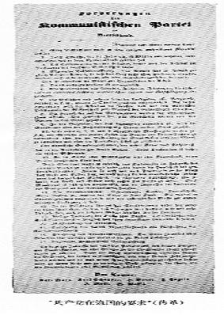

共产党在德国的要求
卡·马克思和弗·恩格斯写于1848年3月21日―29日之间，1848年3月30日左右在巴黎印成传单：并载于下列各报：1848年4月5日“柏林阅报室”第82号的号外；1848年4月6日“曼海姆晚报”第96号；1848年4月6日“特利尔日报”第97号的附页和1848年4月9日“德意志总汇报”第100号的附刊，而在1848年9月10日之前在科伦又印成传单发表
原文是德文
俄文译自“柏林阅报室”，并照科伦的传单原文校对过
“全世界无产者，联合起来！”
1.全德国宣布为一个统一的、不可分割的共和国。
2.凡年满21岁的德国人，只要未受过刑事处分，都有选举权和被选举权。
3.发给人民代表薪金，使德国工人也有可能出席德国人民的国会。
4.武装全体人民。今后，军队同时也应当是劳动大军，使部队不再象以前那样光是消费，并且还能生产，而所生产出来的东西要多于它的给养费用。
此外，这也是组织劳动的一种方法。
5.诉讼免费。
6.无偿地废除一切至今还压在农民头上的封建义务，如徭役租、代役租和什一税等等。
7.各邦君主的领地和其他封建地产，一切矿山、矿井等等，全部归国家所有。在这些土地上用最新的科学方法大规模地经营农业，以利于全社会。
8.农民的抵押地宣布为国家所有。这些抵押地的利息由农民缴纳给国家。
9.在租佃制流行的地区，地租或租金作为赋税缴纳给国家。
实行第6、7、8、9各条中提出的这些措施，是为了减轻农民和小租佃者所担负的社会义务和其他义务，同时也不致减少抵偿国家开支所需的资金，而且不使生产本身遭受损失。
至于既不是农民，又不是租佃者的土地所有者是不参加任何生产的。因此他们的消费纯粹是挥霍。
10.成立国家银行来代替所有的私人银行，国家银行发行的纸币具有法定的比价。
实行这一措施就能按照全体人民的利益来调节信用事业，从而破坏大金融资本家的统治。实行这一措施就能逐渐以纸币代替黄金和白银，使资产阶级流通的必要工具，即一般的交换工具减价，因而就有可能把黄金和白银用到对外贸易上去。最后，为了把保守的资产者的利益和政府的存在联系起来FN1，这个措施也是必要的。
11.国家掌握一切运输工具：铁路、运河、轮船、道路、邮局等等。它们全部归国家所有，并且无偿地由无产阶级支配。
12.所有官员的薪金没有任何差别，只有有家眷的官员，即需求较大的人的薪金可以比别人高一些。
13.彻底实行政教分离。各教派牧师的薪金一律由各个自愿组织起来的宗教团体支付。
14.限制继承权。
15.实行高额累进税，取消消费品税。
16.建立国家工厂。国家保证所有的工人都有生活资料，并且负责照管丧失劳动力的人。
17.实行普遍的免费的国民教育。
为了德国无产阶级、小资产阶级和小农的利益，必须尽力争取实现上述各项措施。因为只有实现了这些措施，一直受少数人剥削，并且今后还有可能受少数人压迫的德国千百万人民，才能争得自己的权利和作为一切财富的生产者所应有的政权。
卡尔·马克思，卡尔·沙佩尔，亨·鲍威尔，弗·恩格斯，约·莫尔，威·沃尔弗

脚 注
FN1 后来在科伦印发的传单上用的不是“和政府的存在联系起来”，而是“和革命联系起来”。——编者注
注 释
1 “共产党在德国的要求”是卡·马克思和弗·恩格斯在1848年3月21日至29日之间在巴黎写成的。这些要求是共产主义者同盟在刚开始的德国革命中的政治纲领。3月30日左右“共产党在德国的要求”印成了传单，4月初发表在“柏林阅报室”、“曼海姆晚报”、“特利尔日报”和“德意志总汇报”等民主报纸上。
“共产党在德国的要求”是作为指示性的文件分发给回国的共产主义者同盟盟员的。在革命的进程中，马克思、恩格斯和他们的拥护者竭力在人民群众中宣传这个纲领性的文件。1848年9月10日以前，“要求”在科伦印成了传单并分发给莱茵省一些地方的科伦工人联合会的会员。除了一些词句上的更动外，传单的原文第10条的条文也与1848年4月所发表的原文略有不同（见本卷第4页）。1848年10月在柏林召开的第二届民主主义者代表大会上，科伦工人联合会的代表博伊斯特以社会问题处理委员会的名义，建议通过一个纲领，这个纲领中的措施几乎完全摘自“要求”。1848年11月和12月在科伦工人联合会的各次会议上曾讨论过“要求”中的个别条文（特别是第1条和第4条）。
1848年底或1849年初“要求”在莱比锡由魏勒印成小册子，原文有所删节：文件开头的口号、第9条的第2段、第10条的最后一句话都被删掉了，另外，在签名中少了“委员会”这几个字。——第3页。